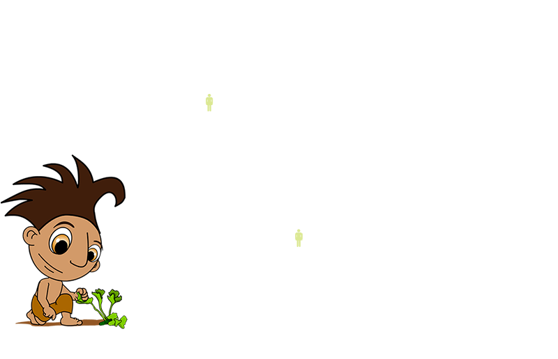
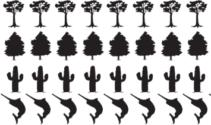

7000 A.C.

7000 A.C.
Nace la agricultura. Los primeros pobladores domestican el maíz, frijol, calabaza y los cazadores-recolectores pasan a ser agricultores. Se originan los primeros pueblos dispersos y la milpa.
Ciudades, agricultura y ganadería

Ecosistemas
